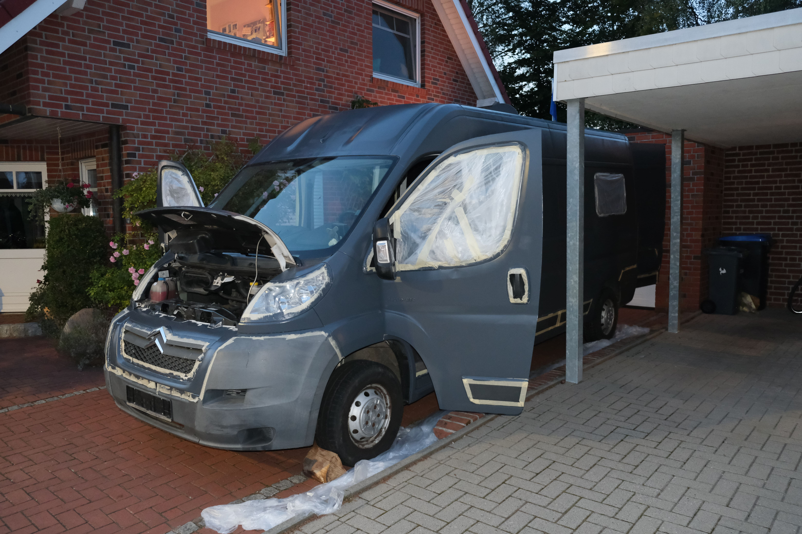
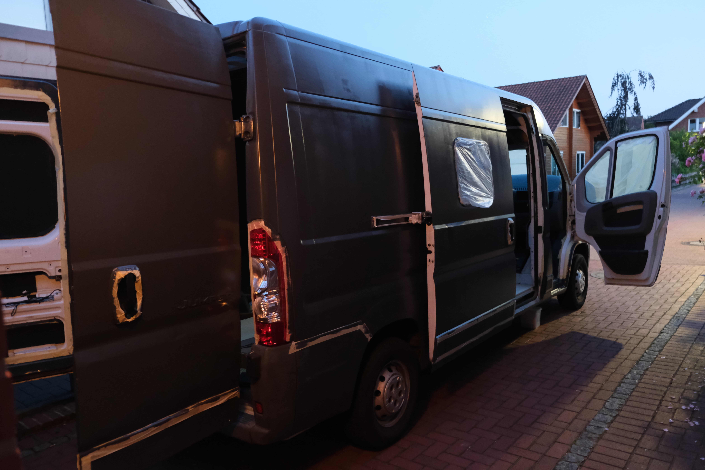

Van Conversion
Blogupdate numero uno!
 Vor allem die Sprühpistole kommt mir in den Kopf, wenn ich an das Thema "Lackieren" denke. Doch wir bauen unseren Camper in einem Wohngebiet auf einer Auffahrt, wenn wir Pech haben, besprühen wir mit dem Nebel nicht nur das Auto, sondern auch alles, was darum steht. Die Sprühdose, welche weniger Nebel produzieren würde, wäre viel zu viel Müll und wäre auch sehr kostspielig, weshalb auch das professionell machen lassen herausfällt. Übrig bleib nur noch das Rollen des Lacks. Ja, man kann Autolack mit einer Rolle auftragen, wobei auch da von vorneherein klar ist, dass es weder "professionell" noch "unglaublich super" aussehen wird, aber wir haben keine andere Wahl und außerdem versuchen wir einfach unser Bestes und das muss nicht "perfekt" sein. Dementsprechend informierten wir uns und schon kam der Tag, als wir mit dem Abschleifen des alten Lacks begannen. Das erste mMal ansetzen zum Abschleifen war ein komisches Gefühl, da man bewusst den Lack kaputt gemacht hat, stell dir mal vor du würdest mit Schleifpapier an dein Auto gehen .. komisch, oder? Naja mit dem Ziel vor den Augen ging es einmal um das gesamte Auto und natürlich auch auf das Dach.
Noch am späten Nachmittag konnten wir dann mit der Reinigung der Oberfläche beginnen. Die ganzen Rückstände und der Lackstaub mussten vom Auto runter, bevor wir mit dem neuen Lack anfangen konnten. Als kleines Team von fünf Leuten haben wir das gesamte Auto gewaschen, um dann am Ende des Tages einen abgeschliffenen weißen Citroen Jumper vor uns stehen zu sehen, super. Der nächste Tag begann so früh wie möglich mit dem Abkleben aller Ränder, Kunststoffteile oder Gläser, einfach alles, was nicht Matt-Grau werden sollte, so sollte nämlich später unser Camper aussehen. Wir versuchten so genau wie nur möglich das Klebeband anzubringen, aber dieser Gedanke, dass nachher der Scheinwerfer einen tollen grauen Ring bekommt, ging mir nicht ganz aus dem Kopf. Denn dann war es so´weit, die Farbe wurde aufgemacht und einem kam der typische Lackgeruch entgegen. Das Lackieren gehörte zu den spannendsten Aufgaben, da wir nicht ganz erahnen konnten, wie das Auto nun später wirklich aussehen würde.
Das Lackieren machten wir in Teamarbeit, der eine mit der Rolle, für die größeren Bereiche, und der andere mit einem kleineren Pinsel, um die ganzen Kanten und Vorsprünge sauber zu bemalen. Am Ende können wir sagen, dass man natürlich von außen erkennt, dass wir das selber gemacht haben und auch, dass wir mit der Rolle gearbeitet haben, statt mit der Pistole, aber dennoch sind wir sehr zufrieden mit dem Ergebnis, da vor allem die Farbe genau unsere Vorstellungen getroffen hat. Wenn wir nun unser Auto von außen gesehen haben, wirke es schon ganz anders. Mit dem Anstrich kam auch endlich der Gedanke, dass es wirklich unser Fahrzeug ist, und das wir mal wirklich einen richtigen Schritt nach vorne gemacht haben. Um noch weiter voranzukommen, entschieden wir uns einfach mal zwei Tage pause zu machen ^^.